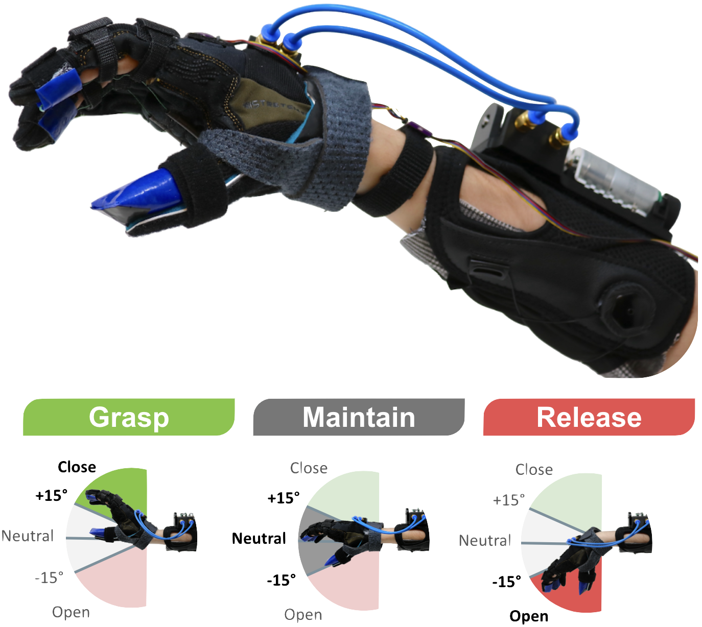

MyHand-SCI
A wearable robot that provides active grasping assistance for individuals with spinal cord injuries (SCI).
For MyHand-SCI we adopted a philosophy of augmenting, rather than overshadowing, an individual’s residual motor skills. The device aims to leverage the tenodesis grasp, a compensatory grasping pattern used by individuals with C5–C6 injuries, as a user control modality.
This can make the device more intuitive, give the user more agency and direct feedback, and encourage adoption.
Publications
- Journal paper, T-MRB (Nov 2024)
- Workshop abstract, IROS 2023 — spotlight and poster at the Assistive Robots for Citizens Workshop
Gallery
